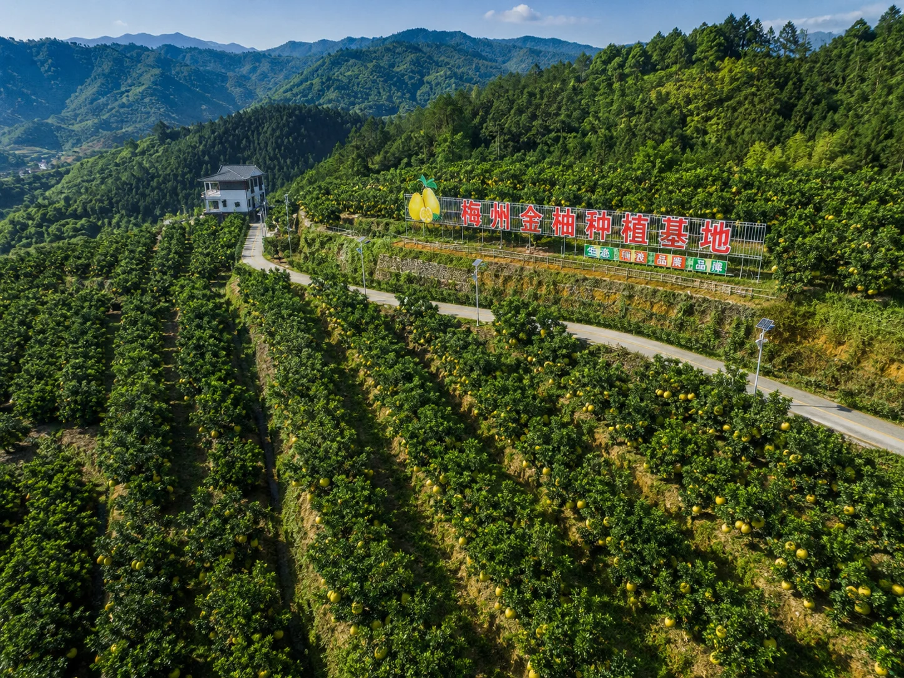

梅州金柚 · 品牌初心
梅州金柚品牌创立于中国金柚之乡——广东省梅州市。我们怀揣对土地的热爱和对品质的执着，致力于将最优质的梅州金柚带给全国消费者。
在乡村振兴的时代背景下，我们深耕金柚产业，整合从种植、采摘、分选到销售的全产业链资源，建立起"果园直供、品质严选、冷链直达"的现代化农产品电商体系。
每一颗梅州金柚，都承载着我们对品质的承诺和对乡村发展的责任。选择梅州金柚，就是选择一份来自大自然的健康美味，也是对中国乡村振兴事业的一份支持。
生态种植
坚持绿色生态理念，守护绿水青山
品质为本
从源头把控品质，每一颗都经过严选
惠农助农
带动农户增收致富，助力乡村振兴
